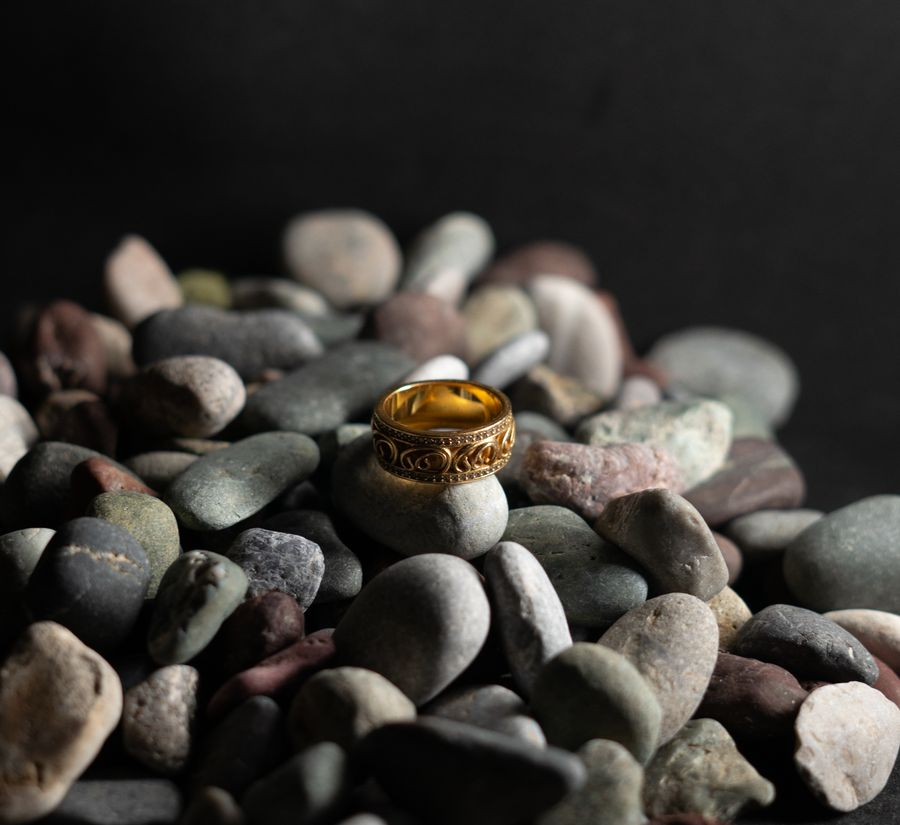
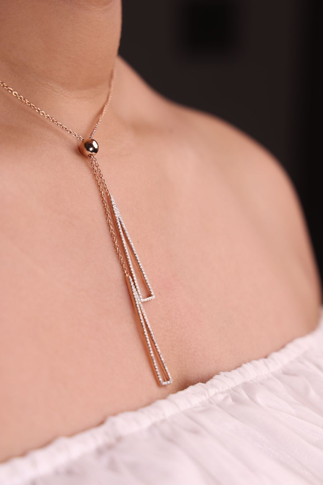
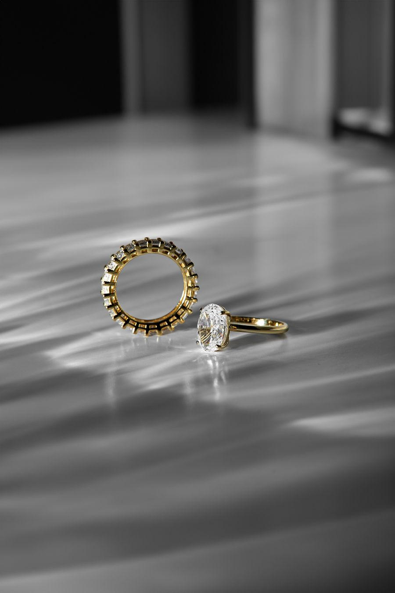

リング
石座の低いゴールドリング
石を低く留め、日常の装いになじむ高さに仕上げたリング。
店頭で試着
リング、ネックレス、ペアリングから、素材や仕上がりの違いをご覧ください。

石を低く留め、日常の装いになじむ高さに仕上げたリング。
店頭で試着
首元で光を受けるチェーン。長さ違いを店頭で比べられます。
チェーン長の相談可
幅や質感をそろえるほか、それぞれの好みで仕上げを選べます。
サイズ・刻印の相談可手元にある宝石やリングをお持ち込みください。石の状態を見ながら、留め直しやリフォームの形を一緒に考えます。
使いたい場面や好きな色、普段の服装を聞かせてください。
素材の色やリングの幅を、自然光でも見比べます。
加工の内容、費用、仕上がり予定をお伝えします。
店頭でサイズを測り、選び方を説明する想定です。
石の状態を確認したうえで、加工の可否をお伝えする設定です。